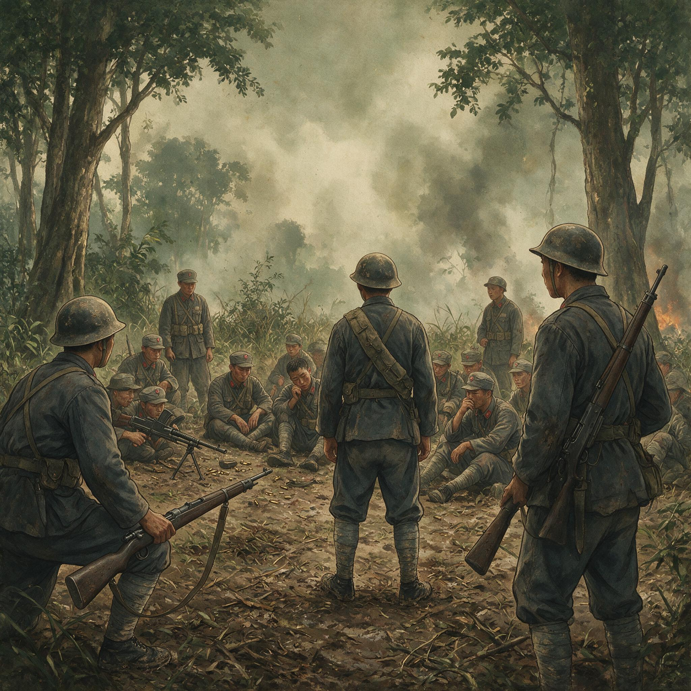

第 10 章
仁安羌：解围的代价
仁安羌油田位于缅甸中部干燥地带，四月已是酷热难当。这里的石油自二十世纪初便被英国资本开采，输油管道蜿蜒通向仰光港，是英帝国在远东最值钱的能源资产之一。

中国远征军第200师士兵
AI 生成插图，非史实影像。
但在1942年4月第三个星期，这片油田的价值不再由原油储量衡量——它变成了一个口袋，袋口收紧时，里面装着英缅第一师主力、装甲第七旅一部，以及跟随部队撤退的传教士、记者、各国平民，总计超过七千人。
把他们装进口袋的是日军第三十三师团。师团长樱井省三中将没有按照英军预期的路线正面推进。他的战术是日军在马来亚、新加坡反复验证过的套路：正面佯攻吸引注意力，主力则从侧翼丛林实施高速穿插，切断守军退路，完成合围。
英军在缅甸的部署存在一个致命弱点——防线沿公路展开，对丛林地带缺乏有效控制，各部队之间的结合部布满空隙。樱井抓住了这个弱点。
四月十二日前后，日军一部从东侧绕过英军阵地，穿越被认为“无法通行”的丛林，突然出现在仁安羌以北的平墙河一线，夺取了关键渡口；
另一部则向西迂回，封堵了英军向南撤退的道路。到十四日，包围圈基本成型。
被围的英缅第一师师长斯科特少将面临的情况迅速恶化。最致命的问题不是弹药——虽然弹药也确实不足——而是水。
仁安羌地区地势荒芜，四月的地表温度超过四十摄氏度，而日军恰恰控制了平墙河沿岸的水源地。包围圈内仅有的几口井很快被汲干，士兵每天的饮水配给降到不足一 pint——不到半升。坦克和装甲车因冷却水耗尽而瘫痪，变成一堆堆灼热的钢铁废铁。无线电设备的电池在高温下迅速失效，与外界联络变得时断时续。
英缅军总司令斯利姆中将当时正在曼德勒方向协调撤退事宜。他后来在回忆录《反败为胜》中承认，仁安羌被围部队的状况已经到了“彻底瓦解的边缘”。
这不是修辞夸张。英缅第一师由英印部队和缅甸本地招募的士兵混编而成，缅甸士兵在日军宣传攻势下本就军心不稳，缺水酷热更彻底摧毁了残余的士气。斯利姆写道，他能从无线电里听出斯科特声音中的绝望——“那种一个指挥官明知自己即将失去对部队控制时的绝望。”
斯科特做了他能做的一切。他命令部队掘井，但干涸的河床只渗出泥浆；他试图组织突围，但日军据守的制高点以机枪火力封锁了每一处可能的出口；他向亚历山大将军发报求援，但亚历山大能调动的预备队早已在之前的战斗中消耗殆尽。
四月十五日，斯科特发出了措辞最严峻的一封电报：若无外援，被围部队将在四十八小时内被迫投降。
亚历山大的选择只有一个方向：中国远征军。此时中国远征军新三十八师刚进驻曼德勒不久。该师前身是财政部税警总团，装备和训练在国军中属较优之列，但入缅时全师兵力不过七千余人，分散在曼德勒周边担任卫戍任务。师长孙立人兼任曼德勒卫戍司令，正忙于布置城防、收拢情报、协调与英军的关系——每一项工作都因盟军指挥体系的混乱而举步维艰。
四月十四日，远征军司令长官罗卓英转来英军紧急求援电文。电文内容简洁而急迫：仁安羌被围，英缅第一师及装甲部队七千余人遭日军包围，缺水断粮，请求中国军队火速驰援。孙立人面临一个典型的战场决策困境。
当面敌情不明：日军在仁安羌方向究竟投入了多少兵力？一一三团如果孤军深入，会不会反遭包围？曼德勒的防务怎么办？
按照正常的军事逻辑，在情报不清、己方兵力有限的情况下，最稳妥的做法是固守现有阵地，等待进一步命令。
但孙立人没有选择稳妥。他决定派出一一三团。这个决定后来被解读为孙立人判断力与决断力的证明，也确实如此。
但在那个时刻，支撑这个决定的不仅是军事判断，还有一种更深层的考量：中国军队入缅以来，英方对中国战斗力的怀疑从未停止过。同古之战虽然证明了二〇〇师的顽强，但那是防御战，是“挨打”而非“出击”。如果这次英军求援被拒绝或延误，中国远征军在盟军体系中的位置将更加边缘化。
孙立人明白这一点。他在后来的战报中没有大书特书这些考量——战报只记录了兵力调动和时间节点——但任何熟悉远征军处境的人都能读出字里行间的压力：这支军队不仅要在战场上证明自己，还要在盟军面前证明自己值得被平等对待。一一三团团长刘放吾接到命令时已是十四日夜间。
全团兵力不满千人，仅辖三个步兵营和一个机枪连，重武器只有迫击炮和轻重机枪。刘放吾没有时间做充分准备。部队连夜集结，携带有限弹药和三日口粮，于十五日凌晨向仁安羌方向开进。
行军路线穿过干燥荒芜的丘陵地带。四月缅甸中部的太阳从清晨就开始灼烤大地，士兵们负重行军，汗透军衣，水壶里的水在出发后几个小时内便消耗大半。
没有空中掩护——中国远征军在整个缅甸战役期间都没有得到过有效的空中支援——部队只能在昼间行军时保持高度警戒，随时准备应对日军飞机的扫射。从曼德勒到仁安羌直线距离不过一百多公里，但实际行军路线因绕避日军控制区而大大延长。
十六日下午，一一三团抵达巧克伯当。斯利姆将军已经在那里等候。这位英军指挥官后来回忆说，他看到这支中国部队时的第一印象是“装备简陋但纪律严明”——士兵们穿着卡其布军装，打着绑腿，扛着中正式步枪和轻机枪，与英印部队杂乱无章的撤退队列形成鲜明对比。
斯利姆向刘放吾介绍了当面敌情：日军约一个大队的兵力据守平墙河北岸高地，控制着通往仁安羌的通道；被围英军仍在固守，但水荒已经导致多起士兵擅自离队寻找水源的事件。
刘放吾没有浪费时间。十七日白天，他派出侦察分队摸清了日军前沿阵地的火力配置；
入夜后，全团推进至攻击出发位置。斯利姆承诺提供坦克和炮兵支援——英军尚有若干装甲车辆可用——但协同作战需要时间协调，而被围部队的时钟在滴答作响。
四月十八日凌晨，攻击开始。一一三团以两个营为第一梯队，在迫击炮火力掩护下强渡平墙河。日军据守北岸高地，以机枪和掷弹筒构成交叉火网。渡河点是一片开阔的沙砾河滩，没有任何遮蔽物。第一波攻击部队冲过河滩时遭遇密集火力拦截，伤亡惨重。但后续梯队没有停顿——刘放吾的命令是连续冲击，不给日军调整火力的间隙。
这是中国士兵在这场战役中反复展现的特质：在缺乏重炮和空中支援的条件下，他们用步兵冲锋弥补火力劣势。这不是战术选择，而是体系缺陷逼迫出的唯一方案。
但一一三团的士兵确实做到了。他们在河滩上倒下了一批又一批，但活着的继续向前冲。到天亮时分，第一营已经在北岸夺取了一处桥头堡。
接下来的战斗持续了整个白天。日军据守的高地地形陡峭，植被稀疏，进攻部队完全暴露在守军火力下。一一三团的迫击炮炮弹有限，每一发都要精打细算。刘放吾将全团仅有的几挺重机枪集中使用，以持续火力压制日军阵地侧翼，掩护步兵逐段推进。到十八日黄昏，中国军队攻克了日军外围三处据点，将战线推进至距仁安羌包围圈仅三公里的位置。
但日军没有溃退。樱井师团的这支部队虽然兵力不占优，但占据地形之利，且得到了师团主力的炮火支援。
十八日夜间，日军组织了数次反冲击，试图把中国军队赶回河南岸。刘放吾的团指挥所就设在刚攻占的一处洼地里，炮弹在四周落下，通讯线路多次被炸断。但一一三团守住了阵地。
十九日拂晓，进攻恢复。这一次，刘放吾将预备队第三营投入战斗，从右翼迂回日军防线侧后。
这个战术动作需要时间——部队要在崎岖地形上行进数公里——但一旦成功，将切断日军前沿阵地与后方的联系。上午十时许，迂回部队抵达指定位置并发起攻击。日军防线开始动摇。午后二时左右，一一三团攻克了平墙河北岸最后一处日军制高点。
通往仁安羌包围圈的通道打开了。被围英军已经听到了枪声由远及近。斯科特少将后来描述那一刻：士兵们从散兵坑和临时掩体中探出头来，看见北面高地上出现了不同于日军军装的卡其色身影。有人开始欢呼，但更多的人因为极度虚弱而只是沉默地站立起来。
缺水已经持续了将近五天。一些士兵嘴唇干裂出血，另一些因脱水而意识模糊。随军的传教士和记者们从藏身的掩体中走出，他们中有的人已经做好了最坏的准备。
下午五时前后，一一三团与被围英军会合。救援通道随即建立，英军、传教士、记者及平民开始沿通道向北撤离。整个过程持续到入夜后。最终统计数字显示：被解救人员超过七千人，其中英缅军官兵约七千名，平民及非战斗人员五百余名。日军遗留在阵地上的尸体超过两百具。
一一三团此役伤亡约三百人——对于一个不满千人的团来说，这是接近三分之一的战斗减员。
消息迅速传开。“仁安羌大捷”——这是中国国内报纸次日使用的标题。《中央日报》以头版报道了这一胜利，着重强调“以少胜多”“解救友军”的英雄叙事。
英美媒体的反应更为热烈。《泰晤士报》称之为“中国军队在缅甸的辉煌战绩”；美国合众社的报道将孙立人比作“中国的劳伦斯”，虽然这个类比在地理和文化上都颇为牵强，但它反映了西方舆论对中国军队认知的一个转折点：在此之前，“中国士兵”在西方报道中的形象是模糊的、边缘化的；在此之后，他们开始被视为一支值得认真对待的战斗力量。
这种声誉上的转折并非毫无根据。仁安羌救援确实是一次教科书级别的战术行动：从接到命令到完成救援，全程不过五天；在敌情不明、地形陌生、兵力劣势的条件下，一一三团以果断的攻击行动击溃了日军阻击部队，成功解救了超过自身兵力七倍的被围友军。任何一个客观的军事观察者都会承认这是一项出色战绩。国民政府迅速做出反应。
孙立人被授予四等云麾勋章。此后不久，美国总统罗斯福授予其丰功勋章，英王乔治六世授予英帝国司令勋章——来自三个国家的荣誉叠加在同一场战役上，在远征军战史上绝无仅有。
但勋章掩盖不了更深层的问题。第一个问题涉及指挥逻辑。孙立人接到求援电文时，他的直属上级罗卓英只是转达了英方请求，并未下达明确的作战命令。这意味着救援行动的决定权实际上落在了师级指挥官手中——这不是正常的指挥链条运作方式。在任何一个运转良好的军事体系中，是否调动一个团去解救友军被围部队、冒多大风险、投入多少兵力，这些决策应该由掌握全局情报的上级指挥机关做出。
但在缅甸战场上，“上级指挥机关”本身就处于分裂状态：史迪威与罗卓英之间的摩擦、亚历山大与史迪威之间的不信任、重庆统帅部与前线指挥部之间的信息延迟——这些因素叠加在一起，导致决策责任不断下移，最终压在了孙立人这样的师级指挥官肩上。孙立人做出了正确决定。
但问题不在于这个决定是否正确，而在于一个师级指挥官本来就不应该独自承担这种层级的决策压力。如果一一三团在仁安羌遭遇失败——这是完全可能的结果——那么承担责任的不会是盟军指挥体系中的任何一位高级将领，只会是孙立人本人。这是“指挥权让渡”的另一种形式：不仅是中方将领在盟军决策中被边缘化，也是在责任分配上被置于最不利的位置——成功时荣耀被各方分享，失败时代价由中方独自承担。
第二个问题更为致命：仁安羌解围之时，被围英军的上层指挥机关已经做出了放弃缅甸中部的决定。
亚历山大将军的决策时间线至今仍存在争议——不同来源的记录存在出入——但可以确定的是：最晚到四月十八日，也就是一一三团在平墙河北岸浴血奋战的那一天，亚历山大已经认定缅甸中部的防御无法继续维持。他的判断基于几个因素：日军在伊洛瓦底江流域的推进速度超出预期；英印部队的士气持续下降；仰光失陷后补充兵员和物资的通道已被切断；以及伦敦方面的战略重心始终在欧洲战场而非远东。
综合这些因素，亚历山大的结论是：继续坚守缅甸中部只会导致更多英军被围歼；唯一可行的选择是全面退往印度边境。
这个决策本身或许有军事上的合理性——缅甸战场在英帝国全球战略中的优先级确实不高——但它的时机和方式对中国远征军构成了灾难性后果。
仁安羌解围战发生时，亚历山大并未将全面撤退的决定告知中方指挥部。孙立人率部驰援时并不知道：他所解救的这支部队，其上级指挥机关已经不再打算坚守这片土地；他所投入的有限兵力所换取的战术胜利，在战略层面已经被英方提前注销了价值。中国军队在仁安羌拼死打开的通道，很快将被英军用于撤退而非反击；而新三十八师为了完成救援任务消耗的兵力和时间，将在接下来的混乱中成为该师与主力失去联系的直接原因。
这不是一次简单的“信息不对称”。这是指挥权让渡的结构性后果：当中方将战役指挥权交予盟军体系后，战略决策——包括是否放弃整个战区——变成了中方无权参与、甚至无权及时获知的过程。
中国军队可以在战术层面证明自己是“世界优秀步兵”，但只要战略决策权掌握在别人手里，“优秀步兵”的血汗就可能在任何时刻被更大的战略计算所稀释、折价乃至抛弃。仁安羌解围后不到四十八小时，这个逻辑便以最具体的方式呈现出来。
英缅第一师获救后没有转入反击姿态。斯科特的部队通过一一三团打开的通道撤出后，立即加入了亚历山大组织的全面撤退序列——沿着通往印度边境的公路和山间小道向西退却。那些被解救出来的士兵、传教士和记者们当然感激中国军队的救援，但感激之情无法改变撤退的事实。
坦克和车辆被遗弃在路边因为缺乏燃料；装备和物资被就地销毁因为无法带走；撤退队列在日军空袭下不断出现伤亡。这不是一场有秩序的转进，而是溃败——尽管官方文件避免使用这个词。
新三十八师被留在了撤退洪流的末端。孙立人接到的后续命令是“掩护英军撤退”。这意味着他的部队不仅要完成救援任务，还要承担整个撤退行动的后卫职责——在最危险的位置阻击追击的日军，确保友军安全脱离接触。
这道命令同样来自盟军指挥层，同样没有给孙立人留下选择的余地。一一三团已经在仁安羌消耗了大量弹药和兵力；全师其他部队分散在曼德勒周边各处；与远征军主力之间的联系因日军穿插而时断时续——在这些条件下担任后卫，无异于将新三十八师置于随时可能被切断包围的险境。
但命令必须执行。四月二十日以后的日子里，新三十八师各部在曼德勒以南地区逐次阻击日军追击部队。这些战斗规模不大但频繁而残酷：一个连据守一处路口直到被包围才奉命撤退；一个营在河谷地带与日军缠斗两昼夜为主力争取转移时间；通讯兵往返于各阵地之间传递命令因为无线电设备已经无法正常工作。
伤亡数字在逐日累积但没有精确统计——在混乱的撤退中，很多阵亡士兵的名字甚至来不及登记就被永远留在了缅甸的土地上。远征军主力部队的命运也在急转直下。同古战后撤退下来的二〇〇师、新二十二师等部本应在平满纳一带重新集结构筑防线——这是史迪威和罗卓英此前制定的计划——但四月十八日前后，这个计划被正式放弃。
原因很简单：西线英军的崩溃使得整个战线失去了支撑点；如果中国军队继续在中路坚守，侧翼将完全暴露给从仁安羌方向南下的日军。放弃平满纳会战构想是一个被迫的决定，但它意味着远征军第一次入缅作战中最后一次有可能稳定战线的机会消失了。从那一刻起，“撤退”变成了“溃退”。各部队之间的联络日益困难；后勤补给线被日军切断或空袭摧毁；
伤员的转运越来越难以组织；逃难平民的人流涌入行军纵队加剧了混乱。缅甸四月的烈日下，一支曾经抱有保卫滇缅路信念的军队正在瓦解——不是因为士兵不够勇敢，而是因为支撑一支现代化军队作战所需的一切体系要素都在同步崩塌：指挥、情报、后勤、空中掩护、友军协同——每一个环节都在漏损，而士兵的血肉被用来填补所有这些漏洞的总和。
仁安羌的胜利在这样的大势面前显得格外锋利。那确实是一场胜利。中国士兵在平墙河北岸的冲锋是真实的；被围英军获救时的欢呼是真实的；英美媒体的赞誉是真实的；勋章和荣誉是真实的。
但这些真实的东西被嵌入在一个更大的真实中：一场已经被盟军高层放弃的战役；一次解围方和被解围方之间根本性的信息错位；一种战术层面的成功无法转化为战略主动权的结构性困境。四月下旬某一天——确切日期在不同记录中有出入——孙立人在曼德勒以北某处接到了关于全面撤退的最新命令。
此时新三十八师已经与主力拉开了相当距离；日军正在多个方向实施穿插；通往印度边境的道路拥挤着各支盟军部队的残部、车辆和难民。这支部队接下来要走的是一条什么样的路、会付出什么样的代价、最终能否抵达目的地——这些问题在当时没有人能准确回答。仁安羌油田重新落入日军手中。
油井设施被占领但基本完好——英国人在撤退前没有来得及彻底破坏它们，或者说没有把这个任务放在优先位置。樱井省三的部队控制了这片缅甸最大的产油区，为日军继续向北推进获得了重要的燃料补给来源。那些曾经被中国士兵用生命打开的通道、那些曾经让七千多人逃脱包围圈的河滩和高地，现在变成了日军前进路线上的一个普通节点。
战场地形不会记住发生过什么；只有人记住。获救的人们确实记住了。多年以后，一些当年的被围者仍然会在回忆中提及那些穿着卡其布军装、绑着绑腿的中国士兵出现在地平线上的时刻。斯利姆在《反败为胜》中给予了冷静但真诚的评价：中国军队在仁安羌的表现证明了他们可以是“出色的战士”。这句话被后世反复引用，成为中国士兵个体素质得到国际认可的证据之一。
但这个评价本身也包含着某种苦涩的反讽。“可以是”——意味着本来可以做到更多；意味着那些被浪费的可能性同样真实存在。
如果指挥体系能够正常运转而不是层层断裂；如果后勤补给能够跟上部队的脚步而不是频频断档；如果战略决策能够在平等协商中做出而不是由一方单独决定然后通知另一方；如果空中掩护能够偶尔出现而不是永远缺席——如果这些条件中的任何一项得到满足，仁安羌的胜利或许能够成为扭转战局的起点而不是孤立的战术亮点。但这些条件都没有出现。
四月十九日下午五时那一刻的欢呼声散去后，留在仁安羌的是三百名阵亡的中国士兵、数百名伤员挤在缺乏药品的临时救护所里、一个弹药几乎耗尽的步兵团即将接到掩护撤退的新命令。而在更北方的某个指挥部里，关于全面退往印度的决策已经做出，只是还没有传达到每一个需要知道它的人手中。油田上空的硝烟在夕阳下缓缓飘散。平墙河的流水声盖过了远处的零星枪声。
被遗弃的坦克残骸在暮色中变成沉默的剪影。战场正在归于寂静——不是和平的寂静，而是下一场溃败来临前短暂的喘息。新三十八师的哨兵们在夜色中睁着眼睛注视南方。他们知道日军就在某个方向；他们不知道自己还要在这片陌生的土地上走多远、付出多少代价；他们更不知道这场战争结束后，有些人将在异国滞留多年甚至终生不得归乡。
“归途无岸”——这四个字在当时还没有被任何人说出，但它所描述的那种处境已经在每一个士兵脚下的尘土中悄然成形。仁安羌的故事到此并未结束。
它只是从“胜利”转入了另一个更漫长的章节：掩护撤退、与主力失联、穿越丛林、最终抵达印度——每一步都在继续支付那场战术胜利所未能抵消的结构性代价。而整支远征军的命运也将在接下来的日子里沿着相似的轨迹滑落：从曼德勒到腊戍、从密支那到野人山、从缅甸到印度——每一站都在证明同一件事：优秀的士兵无法独自打赢一场体系已经崩坏的战争。四月二十日黎明时时分，新三十八师开始撤离仁安羌地区。他们的下一个目的地在地图上标着陌生的名字；他们将要掩护的那支军队正在向西退却；他们身后是重新合拢的日军包围圈和重新沉寂的油田废墟。没有人为这场胜利举行庆祝仪式。没有时间。